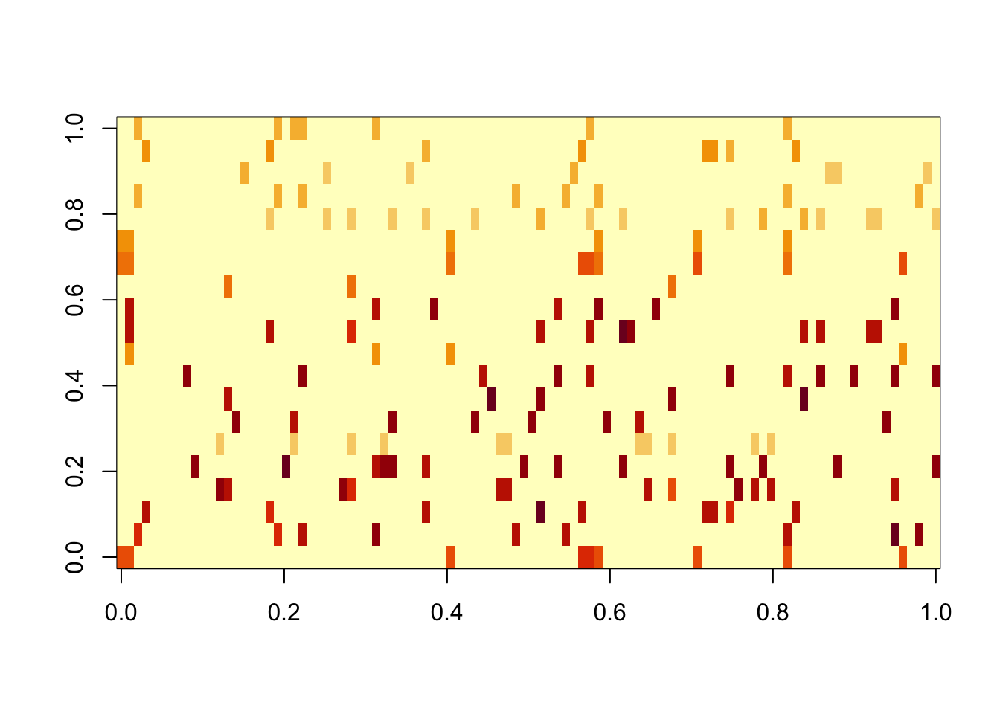
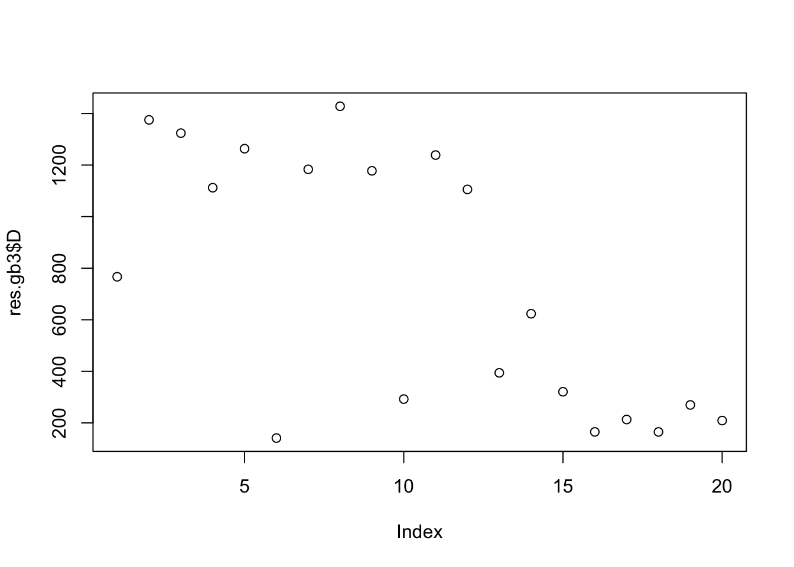

flashier_tree_pexp
Matthew Stephens
2025-07-24
Last updated: 2025-07-31
Checks: 7 0
Knit directory: misc/analysis/
This reproducible R Markdown analysis was created with workflowr (version 1.7.1). The Checks tab describes the reproducibility checks that were applied when the results were created. The Past versions tab lists the development history.
Great! Since the R Markdown file has been committed to the Git repository, you know the exact version of the code that produced these results.
Great job! The global environment was empty. Objects defined in the global environment can affect the analysis in your R Markdown file in unknown ways. For reproduciblity it’s best to always run the code in an empty environment.
The command set.seed(1) was run prior to running the
code in the R Markdown file. Setting a seed ensures that any results
that rely on randomness, e.g. subsampling or permutations, are
reproducible.
Great job! Recording the operating system, R version, and package versions is critical for reproducibility.
Nice! There were no cached chunks for this analysis, so you can be confident that you successfully produced the results during this run.
Great job! Using relative paths to the files within your workflowr project makes it easier to run your code on other machines.
Great! You are using Git for version control. Tracking code development and connecting the code version to the results is critical for reproducibility.
The results in this page were generated with repository version f13ba0a. See the Past versions tab to see a history of the changes made to the R Markdown and HTML files.
Note that you need to be careful to ensure that all relevant files for
the analysis have been committed to Git prior to generating the results
(you can use wflow_publish or
wflow_git_commit). workflowr only checks the R Markdown
file, but you know if there are other scripts or data files that it
depends on. Below is the status of the Git repository when the results
were generated:
Ignored files:
Ignored: .DS_Store
Ignored: .Rhistory
Ignored: .Rproj.user/
Ignored: analysis/.RData
Ignored: analysis/.Rhistory
Ignored: analysis/ALStruct_cache/
Ignored: data/.Rhistory
Ignored: data/methylation-data-for-matthew.rds
Ignored: data/pbmc/
Ignored: data/pbmc_purified.RData
Untracked files:
Untracked: .dropbox
Untracked: Icon
Untracked: analysis/GHstan.Rmd
Untracked: analysis/GTEX-cogaps.Rmd
Untracked: analysis/PACS.Rmd
Untracked: analysis/Rplot.png
Untracked: analysis/SPCAvRP.rmd
Untracked: analysis/abf_comparisons.Rmd
Untracked: analysis/admm_02.Rmd
Untracked: analysis/admm_03.Rmd
Untracked: analysis/bispca.Rmd
Untracked: analysis/cache/
Untracked: analysis/cholesky.Rmd
Untracked: analysis/compare-transformed-models.Rmd
Untracked: analysis/cormotif.Rmd
Untracked: analysis/cp_ash.Rmd
Untracked: analysis/eQTL.perm.rand.pdf
Untracked: analysis/eb_power2.Rmd
Untracked: analysis/eb_prepilot.Rmd
Untracked: analysis/eb_var.Rmd
Untracked: analysis/ebpmf1.Rmd
Untracked: analysis/ebpmf_sla_text.Rmd
Untracked: analysis/ebspca_sims.Rmd
Untracked: analysis/explore_psvd.Rmd
Untracked: analysis/fa_check_identify.Rmd
Untracked: analysis/fa_iterative.Rmd
Untracked: analysis/flash_cov_overlapping_groups_init.Rmd
Untracked: analysis/flash_test_tree.Rmd
Untracked: analysis/flashier_newgroups.Rmd
Untracked: analysis/flashier_nmf_triples.Rmd
Untracked: analysis/flashier_pbmc.Rmd
Untracked: analysis/flashier_snn_shifted_prior.Rmd
Untracked: analysis/greedy_ebpmf_exploration_00.Rmd
Untracked: analysis/ieQTL.perm.rand.pdf
Untracked: analysis/lasso_em_03.Rmd
Untracked: analysis/m6amash.Rmd
Untracked: analysis/mash_bhat_z.Rmd
Untracked: analysis/mash_ieqtl_permutations.Rmd
Untracked: analysis/methylation_example.Rmd
Untracked: analysis/mixsqp.Rmd
Untracked: analysis/mr.ash_lasso_init.Rmd
Untracked: analysis/mr.mash.test.Rmd
Untracked: analysis/mr_ash_modular.Rmd
Untracked: analysis/mr_ash_parameterization.Rmd
Untracked: analysis/mr_ash_ridge.Rmd
Untracked: analysis/mv_gaussian_message_passing.Rmd
Untracked: analysis/nejm.Rmd
Untracked: analysis/nmf_bg.Rmd
Untracked: analysis/nonneg_underapprox.Rmd
Untracked: analysis/normal_conditional_on_r2.Rmd
Untracked: analysis/normalize.Rmd
Untracked: analysis/pbmc.Rmd
Untracked: analysis/pca_binary_weighted.Rmd
Untracked: analysis/pca_l1.Rmd
Untracked: analysis/poisson_nmf_approx.Rmd
Untracked: analysis/poisson_shrink.Rmd
Untracked: analysis/poisson_transform.Rmd
Untracked: analysis/qrnotes.txt
Untracked: analysis/ridge_iterative_02.Rmd
Untracked: analysis/ridge_iterative_splitting.Rmd
Untracked: analysis/samps/
Untracked: analysis/sc_bimodal.Rmd
Untracked: analysis/shrinkage_comparisons_changepoints.Rmd
Untracked: analysis/susie_cov.Rmd
Untracked: analysis/susie_en.Rmd
Untracked: analysis/susie_z_investigate.Rmd
Untracked: analysis/svd-timing.Rmd
Untracked: analysis/temp.RDS
Untracked: analysis/temp.Rmd
Untracked: analysis/test-figure/
Untracked: analysis/test.Rmd
Untracked: analysis/test.Rpres
Untracked: analysis/test.md
Untracked: analysis/test_qr.R
Untracked: analysis/test_sparse.Rmd
Untracked: analysis/tree_dist_top_eigenvector.Rmd
Untracked: analysis/z.txt
Untracked: code/coordinate_descent_symNMF.R
Untracked: code/multivariate_testfuncs.R
Untracked: code/rqb.hacked.R
Untracked: data/4matthew/
Untracked: data/4matthew2/
Untracked: data/E-MTAB-2805.processed.1/
Untracked: data/ENSG00000156738.Sim_Y2.RDS
Untracked: data/GDS5363_full.soft.gz
Untracked: data/GSE41265_allGenesTPM.txt
Untracked: data/Muscle_Skeletal.ACTN3.pm1Mb.RDS
Untracked: data/P.rds
Untracked: data/Thyroid.FMO2.pm1Mb.RDS
Untracked: data/bmass.HaemgenRBC2016.MAF01.Vs2.MergedDataSources.200kRanSubset.ChrBPMAFMarkerZScores.vs1.txt.gz
Untracked: data/bmass.HaemgenRBC2016.Vs2.NewSNPs.ZScores.hclust.vs1.txt
Untracked: data/bmass.HaemgenRBC2016.Vs2.PreviousSNPs.ZScores.hclust.vs1.txt
Untracked: data/eb_prepilot/
Untracked: data/finemap_data/fmo2.sim/b.txt
Untracked: data/finemap_data/fmo2.sim/dap_out.txt
Untracked: data/finemap_data/fmo2.sim/dap_out2.txt
Untracked: data/finemap_data/fmo2.sim/dap_out2_snp.txt
Untracked: data/finemap_data/fmo2.sim/dap_out_snp.txt
Untracked: data/finemap_data/fmo2.sim/data
Untracked: data/finemap_data/fmo2.sim/fmo2.sim.config
Untracked: data/finemap_data/fmo2.sim/fmo2.sim.k
Untracked: data/finemap_data/fmo2.sim/fmo2.sim.k4.config
Untracked: data/finemap_data/fmo2.sim/fmo2.sim.k4.snp
Untracked: data/finemap_data/fmo2.sim/fmo2.sim.ld
Untracked: data/finemap_data/fmo2.sim/fmo2.sim.snp
Untracked: data/finemap_data/fmo2.sim/fmo2.sim.z
Untracked: data/finemap_data/fmo2.sim/pos.txt
Untracked: data/logm.csv
Untracked: data/m.cd.RDS
Untracked: data/m.cdu.old.RDS
Untracked: data/m.new.cd.RDS
Untracked: data/m.old.cd.RDS
Untracked: data/mainbib.bib.old
Untracked: data/mat.csv
Untracked: data/mat.txt
Untracked: data/mat_new.csv
Untracked: data/matrix_lik.rds
Untracked: data/paintor_data/
Untracked: data/running_data_chris.csv
Untracked: data/running_data_matthew.csv
Untracked: data/temp.txt
Untracked: data/y.txt
Untracked: data/y_f.txt
Untracked: data/zscore_jointLCLs_m6AQTLs_susie_eQTLpruned.rds
Untracked: data/zscore_jointLCLs_random.rds
Untracked: explore_udi.R
Untracked: output/fit.k10.rds
Untracked: output/fit.nn.pbmc.purified.rds
Untracked: output/fit.nn.rds
Untracked: output/fit.nn.s.001.rds
Untracked: output/fit.nn.s.01.rds
Untracked: output/fit.nn.s.1.rds
Untracked: output/fit.nn.s.10.rds
Untracked: output/fit.snn.s.001.rds
Untracked: output/fit.snn.s.01.nninit.rds
Untracked: output/fit.snn.s.01.rds
Untracked: output/fit.varbvs.RDS
Untracked: output/fit2.nn.pbmc.purified.rds
Untracked: output/glmnet.fit.RDS
Untracked: output/snn07.txt
Untracked: output/snn34.txt
Untracked: output/test.bv.txt
Untracked: output/test.gamma.txt
Untracked: output/test.hyp.txt
Untracked: output/test.log.txt
Untracked: output/test.param.txt
Untracked: output/test2.bv.txt
Untracked: output/test2.gamma.txt
Untracked: output/test2.hyp.txt
Untracked: output/test2.log.txt
Untracked: output/test2.param.txt
Untracked: output/test3.bv.txt
Untracked: output/test3.gamma.txt
Untracked: output/test3.hyp.txt
Untracked: output/test3.log.txt
Untracked: output/test3.param.txt
Untracked: output/test4.bv.txt
Untracked: output/test4.gamma.txt
Untracked: output/test4.hyp.txt
Untracked: output/test4.log.txt
Untracked: output/test4.param.txt
Untracked: output/test5.bv.txt
Untracked: output/test5.gamma.txt
Untracked: output/test5.hyp.txt
Untracked: output/test5.log.txt
Untracked: output/test5.param.txt
Unstaged changes:
Modified: .gitignore
Modified: analysis/eb_snmu.Rmd
Modified: analysis/ebnm_binormal.Rmd
Modified: analysis/ebpower.Rmd
Modified: analysis/flashier_log1p.Rmd
Modified: analysis/flashier_sla_text.Rmd
Modified: analysis/logistic_z_scores.Rmd
Modified: analysis/mr_ash_pen.Rmd
Modified: analysis/nmu_em.Rmd
Modified: analysis/susie_flash.Rmd
Modified: analysis/tap_free_energy.Rmd
Modified: misc.Rproj
Note that any generated files, e.g. HTML, png, CSS, etc., are not included in this status report because it is ok for generated content to have uncommitted changes.
These are the previous versions of the repository in which changes were
made to the R Markdown
(analysis/flashier_point_laplace_initialization.Rmd) and
HTML (docs/flashier_point_laplace_initialization.html)
files. If you’ve configured a remote Git repository (see
?wflow_git_remote), click on the hyperlinks in the table
below to view the files as they were in that past version.
| File | Version | Author | Date | Message |
|---|---|---|---|---|
| Rmd | f13ba0a | Matthew Stephens | 2025-07-31 | workflowr::wflow_publish("analysis/flashier_point_laplace_initialization.Rmd") |
library(flashier)Loading required package: ebnmlibrary(codesymnmf)Introduction
It seems like we have reached the following conclusion: when data come from a tree, the point laplace prior, with backfitting, finds the tree. Splitting the point laplace and running GB then preserves the tree (but also keeps additional factors). Unlike point laplace, point exponential often does not find the tree. Indeed, even when initialized from a tree-like fit, point exponential may move away from it to prefer a more regular (non-binary) “NMF” solution.
This document is trying to illustrate some of this, and also explore non tree like cases.
Balanced Tree
I’m going to start with simulations with a balanced tree with 4 tips. I start with some code for simulating this.
Tree simulation code
#################################################################
# Scenario 2: Bifurcating Tree Structure
#################################################################
#' Simulate data with a bifurcating tree structure for the loadings matrix.
#'
#' This function generates a data matrix X = LF' + E, where the loadings
#' matrix L represents a fixed bifurcating tree with four leaves.
#'
#' @param leaf_sizes A numeric vector with the size of each of the 4 leaf groups.
#' @param p An integer, the number of features.
#' @param sigma2 A numeric, the variance of the error term E.
#' @param sigma_k2 A numeric or vector, the variance(s) for the factor matrix F.
#'
#' @return A list containing the simulated data matrix X, loadings L, factors F, and error E.
#'
simulate_bifurcating_tree <- function(leaf_sizes, p, sigma2, sigma_k2) {
# This function is specifically designed for the 4-leaf tree structure.
num_leaves <- length(leaf_sizes)
if (num_leaves != 4) {
stop("This function is hardcoded for a bifurcating tree with 4 leaves.")
}
n <- sum(leaf_sizes)
K <- 7 # For a full binary tree with 4 leaves, K = 2*4 - 1 = 7
# 1. Construct the Loadings matrix L (n x K)
# This is the base structure for one sample at each of the 4 leaves.
L_prototype <- matrix(c(
1, 1, 0, 1, 0, 0, 0,
1, 1, 0, 0, 1, 0, 0,
1, 0, 1, 0, 0, 1, 0,
1, 0, 1, 0, 0, 0, 1
), nrow = 4, byrow = TRUE)
# Expand the prototype by repeating each row according to the specified leaf_sizes.
L <- L_prototype[rep(1:num_leaves, times = leaf_sizes), ]
# 2. Construct the Factor matrix F (p x K)
if (length(sigma_k2) == 1) {
sigma_k2 <- rep(sigma_k2, K)
}
F_mat <- matrix(NA, nrow = p, ncol = K)
for (k in 1:K) {
F_mat[, k] <- rnorm(p, mean = 0, sd = sqrt(sigma_k2[k]))
}
# 3. Construct the Error matrix E (n x p)
E <- matrix(rnorm(n * p, mean = 0, sd = sqrt(sigma2)), nrow = n, ncol = p)
# 4. Compute the data matrix X = LF' + E
X <- L %*% t(F_mat) + E
return(list(X = X, L = L, F = F_mat, E = E))
}
params_tree <- list(
leaf_sizes = c(40, 40, 40, 40), # n = 160
p = 1000,
sigma2 = 1,
sigma_k2 = rep(4,7) # For K = 7 factors
)
set.seed(2)
sim_tree <- do.call(simulate_bifurcating_tree, params_tree)
S = sim_tree$X %*% t(sim_tree$X)
image(S)Code to estimate D from L
#' Estimate the diagonal matrix D that minimizes ||S - LDL'||^2_F
#'
#' @param S A given n x n matrix.
#' @param L A given n x k matrix.
#' @return A k vector containing diagonal entries of D that minimize objective
estimate_D <- function(S, L) {
# Get dimensions
n <- nrow(S)
k <- ncol(L)
# Check for conformable dimensions
if (nrow(L) != n) {
stop("Matrices S and L have non-conformable dimensions (rows must match).")
}
# 1. Pre-compute helper matrices (C and B will be k x k)
C <- t(L) %*% L
B <- t(L) %*% S %*% L
# 2. Construct the linear system M d = b
M <- C * C
b <- diag(B)
# 3. Solve for the k diagonal elements of D
d_vector <- qr.solve(M, b)
return(d_vector)
}Run point laplace
Here I run point-laplace on the symmetric S matrix. It finds the tree structure.
fit.pl = flash(data=S, ebnm_fn = ebnm::ebnm_point_laplace, greedy_Kmax = 10, backfit=TRUE)Adding factor 1 to flash object...
Adding factor 2 to flash object...
Adding factor 3 to flash object...
Adding factor 4 to flash object...
Adding factor 5 to flash object...
Factor doesn't significantly increase objective and won't be added.
Wrapping up...
Done.
Backfitting 4 factors (tolerance: 3.81e-04)...
Difference between iterations is within 1.0e+04...
Difference between iterations is within 1.0e+03...
Difference between iterations is within 1.0e+02...
Difference between iterations is within 1.0e+01...
Difference between iterations is within 1.0e+00...
Difference between iterations is within 1.0e-01...
Difference between iterations is within 1.0e-02...
Difference between iterations is within 1.0e-03...
Wrapping up...
Done.
Nullchecking 4 factors...
Done.par(mfcol=c(2,2),mai=rep(0.3,4))
for(k in 1:4)
plot(fit.pl$L_pm[,k])We can also find the tree by running point-laplace on the data matrix with normal prior on F. It still works. (Note: we know that running on the data matrix with normal prior on F encourages independent/orthogonal L values; that does not hurt here because the way the point-laplace finds the tree structure is by using approximately orthogonal factors.)
X = sim_tree$X
fit.data.pl = flash(data = X, ebnm_fn = c(ebnm::ebnm_point_laplace,ebnm::ebnm_normal), greedy_Kmax = 10, backfit=TRUE)Adding factor 1 to flash object...
Adding factor 2 to flash object...
Adding factor 3 to flash object...
Adding factor 4 to flash object...
Adding factor 5 to flash object...
Factor doesn't significantly increase objective and won't be added.
Wrapping up...
Done.
Backfitting 4 factors (tolerance: 2.38e-03)...
Difference between iterations is within 1.0e+03...
Difference between iterations is within 1.0e+02...
Difference between iterations is within 1.0e+01...
Difference between iterations is within 1.0e+00...
Difference between iterations is within 1.0e-01...
Difference between iterations is within 1.0e-02...
Difference between iterations is within 1.0e-03...
Wrapping up...
Done.
Nullchecking 4 factors...
Done.par(mfcol=c(2,2),mai=rep(0.3,4))
for(k in 1:4)
plot(fit.data.pl$L_pm[,k])Split point-laplace into pairs
Here I split into pairs and remove the zero columns before estimating D
L = fit.pl$L_pm
L = cbind(pmax(L,0),pmax(-L,0))
#remove any column that is all 0s; then normalize columns
zero_col = apply(L,2, function(x){all(x==0)})
L = L[,!zero_col]
norm = function(x){return(x/sqrt(sum(x^2)))}
L = apply(L,2,norm)
d = estimate_D(S,L) # this is the least squares estimate of d so can be negative
# set negative entries to 0; then iterate local updates for each element of d 10 times
d = pmax(d,0)
K = ncol(L)
for(i in 1:10){
for(k in 1:K){
U = L[,-k,drop=FALSE]
v = L[,k,drop=FALSE]
D = diag(d[-k],nrow=length(d[-k]))
d[k] = max(t(v) %*% S %*% v - t(v) %*% U %*% D %*% t(U) %*% v,0)
}
}
scaledL = L %*% diag(sqrt(d),nrow=length(d))
image(scaledL)GB prior from PL initialization
Here I run flash with GB prior on the S matrix, initialized from the (split) point laplace solution. The GB prior keeps the tree structure (ie it does not change much from the initialization).
fit.gb.init = flash_init(data=S) |>
flash_factors_init(init=list(scaledL,scaledL), ebnm_fn = ebnm::ebnm_generalized_binary) |>
flash_backfit(maxiter =10000)Backfitting 7 factors (tolerance: 3.81e-04)...
Difference between iterations is within 1.0e+03...
Difference between iterations is within 1.0e+02...
Difference between iterations is within 1.0e+01...
Difference between iterations is within 1.0e+00...
Difference between iterations is within 1.0e-01...
Difference between iterations is within 1.0e-02...
Difference between iterations is within 1.0e-03...
Wrapping up...
Done.res.gb = ldf(fit.gb.init,type="i")
image(res.gb$L %*% diag(sqrt(res.gb$D)))Here I try something similar for the data matrix, with GB prior on L and normal prior on F. For simplicity (and to make the point more strongly) I initialize at the true values of L and F. The GB prior goes away from the tree solution and goes to the “clustering” solution, in which correlations are captured in F. Our understanding is that this happens because the mean field approximation encourages L to be diagonal (which it is for the cluster solution, but not the tree solution).
fit.data.gb.init = flash_init(data=X) |>
flash_factors_init(init=list(sim_tree$L,sim_tree$F), ebnm_fn = c(ebnm::ebnm_generalized_binary,ebnm::ebnm_normal)) |>
flash_backfit(maxiter =10000)Backfitting 7 factors (tolerance: 2.38e-03)...
Difference between iterations is within 1.0e+01...
--Estimate of factor 3 is numerically zero!
Difference between iterations is within 1.0e+00...
Difference between iterations is within 1.0e-01...
Wrapping up...
Done.res.data.gb = ldf(fit.data.gb.init,type="i")
image(res.data.gb$L %*% diag(sqrt(res.data.gb$D)))
I wanted to check the same thing happens with a point-laplace prior on F, and it does.
fit.data2.gb.init = flash_init(data=X) |>
flash_factors_init(init=list(sim_tree$L,sim_tree$F), ebnm_fn = c(ebnm::ebnm_generalized_binary,ebnm::ebnm_point_laplace)) |>
flash_backfit(maxiter =10000)Backfitting 7 factors (tolerance: 2.38e-03)...
Difference between iterations is within 1.0e+01...
--Estimate of factor 3 is numerically zero!
Difference between iterations is within 1.0e+00...
--Estimate of factor 2 is numerically zero!
--Estimate of factor 2 is numerically zero!
Difference between iterations is within 1.0e-01...
--Estimate of factor 1 is numerically zero!
Difference between iterations is within 1.0e-02...
Difference between iterations is within 1.0e-03...
Wrapping up...
Done.res.data2.gb = ldf(fit.data2.gb.init,type="i")
image(res.data2.gb$L %*% diag(sqrt(res.data2.gb$D)))Point exponential prior with PL initialization
Here we try analyzing S again, but with point exponential priors instead of GB. In contrast to GB prior, the point exponential changes from the binary tree structure, even when initialized from the PL solution. It seems to prefer something closer to a regular NMF-like solution, which exploits its greater flexibility to avoid some of the factors. (Since the data matrix methods don’t like the tree solution with GB prior, there’s no reason to think that they will with PE prior so I don’t do those.)
fit.pe.init = flash_init(data=S) |>
flash_factors_init(init=list(scaledL,scaledL), ebnm_fn = ebnm::ebnm_point_exponential) |>
flash_backfit(maxiter =10000)Backfitting 7 factors (tolerance: 3.81e-04)...
Difference between iterations is within 1.0e+03...
Difference between iterations is within 1.0e+02...
Difference between iterations is within 1.0e+01...
Difference between iterations is within 1.0e+00...
Difference between iterations is within 1.0e-01...
Difference between iterations is within 1.0e-02...
Difference between iterations is within 1.0e-03...
Wrapping up...
Done.res.pe = ldf(fit.pe.init,type="i")
image(res.pe$L %*% diag(sqrt(res.pe$D)))Star Tree
Now I simulate a “star” tree - it has no weight on the branches corresponding to the top split. This changes things in that the point-laplace strategy now finds some factors that do not actually exist in the tree (because the point-laplace factors introduce some negative correlations that do not exist in the data and then need to be accounted for somehow). Re-estimating D will downweight those factors but may not remove them entirely.
set.seed(1)
params_star <- list(
leaf_sizes = c(40, 40, 40, 40), # n = 160
p = 1000,
sigma2 = 1,
sigma_k2 = c(4,0,0,4,4,4,4) # For K = 7 factors
)
sim_star <- do.call(simulate_bifurcating_tree, params_star)
S = sim_star$X %*% t(sim_star$X)
image(S)Running point laplace: note that in addition to factors capturing the individual tips, you also get a factor that splits 2 vs 2 - a “non-existent” top branch. This is because the point-laplace induces negative correlations between the tips that it needs to correct for. My expectation is that this will disappear, or be substantially downweighted, when I split the factors and reestimate the weights (D).
fit.pl = flash(data=S, ebnm_fn = ebnm::ebnm_point_laplace, greedy_Kmax = 10, backfit=TRUE)Adding factor 1 to flash object...
Adding factor 2 to flash object...
Adding factor 3 to flash object...
Adding factor 4 to flash object...
Adding factor 5 to flash object...
Factor doesn't significantly increase objective and won't be added.
Wrapping up...
Done.
Backfitting 4 factors (tolerance: 3.81e-04)...
Difference between iterations is within 1.0e+04...
Difference between iterations is within 1.0e+03...
Difference between iterations is within 1.0e+02...
Difference between iterations is within 1.0e+01...
Difference between iterations is within 1.0e+00...
Difference between iterations is within 1.0e-01...
Difference between iterations is within 1.0e-02...
Difference between iterations is within 1.0e-03...
Wrapping up...
Done.
Nullchecking 4 factors...
Done.par(mfcol=c(2,2),mai=rep(0.3,4))
for(k in 1:4)
plot(fit.pl$L_pm[,k])Here I split the factors into pairs and re-estimate D. We see that the non-existent top branches get 0 weights.
L = fit.pl$L_pm
L = cbind(pmax(L,0),pmax(-L,0))
#remove any column that is all 0s; then normalize columns
zero_col = apply(L,2, function(x){all(x==0)})
L = L[,!zero_col]
norm = function(x){return(x/sqrt(sum(x^2)))}
L = apply(L,2,norm)
d = estimate_D(S,L) # this is the least squares estimate of d so can be negative
# set negative entries to 0; then iterate local updates for each element of d 10 times
d = pmax(d,0)
K = ncol(L)
for(i in 1:10){
for(k in 1:K){
U = L[,-k,drop=FALSE]
v = L[,k,drop=FALSE]
D = diag(d[-k],nrow=length(d[-k]))
d[k] = max(t(v) %*% S %*% v - t(v) %*% U %*% D %*% t(U) %*% v,0)
}
}
print(d)[1] 175459.6 167440.9 0.0 697281.7 166604.9 170086.2 0.0scaledL = L[,d>0] %*% diag(sqrt(d[d>0]),nrow=length(d[d>0]))
image(scaledL)Here I run flash with GB prior on the S matrix, initialized from the (split) point laplace solution. As with the bifurcating tree, GB prior keeps the tree structure (ie it does not change much from the initialization). Note that the “intercept” factor is not quite constant - it might be best to include a fixed constant intercept factor if we want to avoid that kind of thing.
fit.gb.init = flash_init(data=S) |>
flash_factors_init(init=list(scaledL,scaledL), ebnm_fn = ebnm::ebnm_generalized_binary) |>
flash_backfit(maxiter =10000)Backfitting 5 factors (tolerance: 3.81e-04)...
Difference between iterations is within 1.0e+02...
Difference between iterations is within 1.0e+01...
Difference between iterations is within 1.0e+00...
Difference between iterations is within 1.0e-01...
Difference between iterations is within 1.0e-02...
Difference between iterations is within 1.0e-03...
Wrapping up...
Done.res.gb = ldf(fit.gb.init,type="i")
image(res.gb$L %*% diag(sqrt(res.gb$D)))par(mfcol=c(2,3),mai=rep(0.3,4))
for(k in 1:5)
plot(fit.gb.init$L_pm[,k])Overlapping clusters
Now I try simulating the (non-tree) ``overlapping cluster” case, where the L factors are independent Bernoulli. This is maybe more difficult than the tree case for point-laplace, so it is a nice test case to see if the point-laplace initialization still works. Here is code to simulate data.
#################################################################
# Scenario 3: Overlapping Structure
#################################################################
#' Simulate data with an overlapping structure for the loadings matrix.
#'
#' This function generates a data matrix X = LF' + E, where the entries of the
#' loadings matrix L are drawn from a Bernoulli distribution, allowing for
#' samples to have membership in multiple groups.
#'
#' @param n An integer, the number of samples.
#' @param p An integer, the number of features.
#' @param K An integer, the number of factors/groups.
#' @param pi1 A numeric value (between 0 and 1), the Bernoulli probability for L entries.
#' @param sigma2 A numeric, the variance of the error term E.
#' @param sigma_k2 A numeric or vector, the variance(s) for the factor matrix F.
#'
#' @return A list containing the simulated data matrix X, loadings L, factors F, and error E.
#'
simulate_overlapping <- function(n, p, K, pi1, sigma2, sigma_k2) {
# 1. Construct the Loadings matrix L (n x K)
# Each entry is an independent Bernoulli trial.
L <- matrix(rbinom(n * K, size = 1, prob = pi1), nrow = n, ncol = K)
# 2. Construct the Factor matrix F (p x K)
if (length(sigma_k2) == 1) {
sigma_k2 <- rep(sigma_k2, K)
}
F_mat <- matrix(NA, nrow = p, ncol = K)
for (k in 1:K) {
F_mat[, k] <- rnorm(p, mean = 0, sd = sqrt(sigma_k2[k]))
}
# 3. Construct the Error matrix E (n x p)
E <- matrix(rnorm(n * p, mean = 0, sd = sqrt(sigma2)), nrow = n, ncol = p)
# 4. Compute the data matrix X = LF' + E
X <- L %*% t(F_mat) + E
return(list(X = X, L = L, F = F_mat, E = E))
}
### --- Run Scenario 3 Simulation ---
params_overlapping <- list(
n = 100,
p = 1000,
K = 10,
pi1 = 0.1,
sigma2 = 1,
sigma_k2 = 1
)
sim_overlapping <- do.call(simulate_overlapping, params_overlapping)
S = sim_overlapping$X %*% t(sim_overlapping$X)
image(S)Running flashier on the S matrix with point laplace prior. It finds 10 factors - which will be increased to 20 after splitting.
fit.pl = flash(data=S, ebnm_fn = ebnm::ebnm_point_laplace, greedy_Kmax = 20, backfit=TRUE)Adding factor 1 to flash object...
Adding factor 2 to flash object...
Adding factor 3 to flash object...
Adding factor 4 to flash object...
Adding factor 5 to flash object...
Adding factor 6 to flash object...
Adding factor 7 to flash object...
Adding factor 8 to flash object...
Adding factor 9 to flash object...
Adding factor 10 to flash object...
Adding factor 11 to flash object...
Factor doesn't significantly increase objective and won't be added.
Wrapping up...
Done.
Backfitting 10 factors (tolerance: 1.49e-04)...
Difference between iterations is within 1.0e+02...
Difference between iterations is within 1.0e+01...
Difference between iterations is within 1.0e+00...
Difference between iterations is within 1.0e-01...
Difference between iterations is within 1.0e-02...
Difference between iterations is within 1.0e-03...
Difference between iterations is within 1.0e-04...
Wrapping up...
Done.
Nullchecking 10 factors...
Done.Splitting. We see that after splitting, each true factor is captured by at least one other factor with correlation exceeding 0.8.
L = fit.pl$L_pm
L = cbind(pmax(L,0),pmax(-L,0))
#remove any column that is all 0s; then normalize columns
zero_col = apply(L,2, function(x){all(x==0)})
L = L[,!zero_col]
norm = function(x){return(x/sqrt(sum(x^2)))}
L = apply(L,2,norm)
d = estimate_D(S,L) # this is the least squares estimate of d so can be negative
# set negative entries to 0; then iterate local updates for each element of d 10 times
d = pmax(d,0)
K = ncol(L)
for(i in 1:10){
for(k in 1:K){
U = L[,-k,drop=FALSE]
v = L[,k,drop=FALSE]
D = diag(d[-k],nrow=length(d[-k]))
d[k] = max(t(v) %*% S %*% v - t(v) %*% U %*% D %*% t(U) %*% v,0)
}
}
scaledL.pl = L %*% diag(sqrt(d),nrow=length(d))
image(scaledL.pl)apply(cor(sim_overlapping$L,L),1,max) [1] 0.8373273 0.9997012 0.8702571 0.8064068 0.8018187 0.8527269 0.8935886
[8] 0.9995136 0.9991889 0.9988286Fit gb prior from this solution. After backfitting it has captured every factor very precisely. However, there remain another 10 factors that are “noise”.
fit.gb.init = flash_init(data=S) |>
flash_factors_init(init=list(scaledL.pl,scaledL.pl), ebnm_fn = ebnm::ebnm_generalized_binary) |>
flash_backfit(maxiter =10000)Backfitting 20 factors (tolerance: 1.49e-04)...
Difference between iterations is within 1.0e+02...
Difference between iterations is within 1.0e+01...
Difference between iterations is within 1.0e+00...
Difference between iterations is within 1.0e-01...
Wrapping up...
Done.res.gb = ldf(fit.gb.init,type="i")
image(res.gb$L %*% diag(sqrt(res.gb$D)))
apply(cor(sim_overlapping$L,res.gb$L),1,max) [1] 0.9985591 0.9996712 0.9986700 0.9996270 0.9976296 0.9987763 0.9951237
[8] 0.9983535 0.9980711 0.9990746plot(sqrt(res.gb$D))plot(fit.gb.init$pve)All the noise factors are “somewhat” correlated with one of the true factors:
apply(cor(sim_overlapping$L,res.gb$L),2,max) [1] 0.3880381 0.4760747 0.9990746 0.9987763 0.4084375 0.9996270 0.9951237
[8] 0.9985591 0.9996712 0.9980711 0.5769912 0.6672203 0.5001826 0.8386079
[15] 0.9983535 0.9976296 0.9986700 0.5672753 0.4081128 0.2288980plot(res.gb$L[,1],sim_overlapping$L[,8])And point-exp. This 0s out some of the noise factors, but there is no longer a separation in terms of the norm of the signal vs noise factors.
fit.pe.init = flash_init(data=S) |>
flash_factors_init(init=list(scaledL.pl,scaledL.pl), ebnm_fn = ebnm::ebnm_point_exponential) |>
flash_backfit(maxiter =10000)Backfitting 20 factors (tolerance: 1.49e-04)...
--Estimate of factor 1 is numerically zero!
--Estimate of factor 5 is numerically zero!
--Estimate of factor 19 is numerically zero!
--Estimate of factor 20 is numerically zero!
Difference between iterations is within 1.0e+02...
Difference between iterations is within 1.0e+01...
--Estimate of factor 12 is numerically zero!
--Estimate of factor 14 is numerically zero!
--Estimate of factor 11 is numerically zero!
Difference between iterations is within 1.0e+00...
Difference between iterations is within 1.0e-01...
Difference between iterations is within 1.0e-02...
Difference between iterations is within 1.0e-03...
Difference between iterations is within 1.0e-04...
Wrapping up...
Done.res.pe = ldf(fit.pe.init,type="i")
res.pe$L = res.pe$L[,res.pe$D>0]
res.pe$D = res.pe$D[res.pe$D>0]
image(res.pe$L %*% diag(sqrt(res.pe$D)))apply(cor(sim_overlapping$L,res.pe$L),1,max) [1] 0.9956095 0.9962150 0.9971473 0.9982653 0.9679725 0.9985727 0.9910375
[8] 0.9995323 0.9943218 0.9982473plot(sqrt(res.pe$D))Here I fit GB, initializing from the true solution, so it excludes the noise factors. The elbo is worse than the solution with the noise factors, demonstrating that the noise factors are an issue with the objective function, rather than a computational issue associated with a local optimum.
fit.gb.init2 = flash_init(data=S) |>
flash_factors_init(init=list(sim_overlapping$L,sim_overlapping$L), ebnm_fn = ebnm::ebnm_generalized_binary) |>
flash_backfit(maxiter =10000)Backfitting 10 factors (tolerance: 1.49e-04)...
Difference between iterations is within 1.0e+03...
Difference between iterations is within 1.0e+02...
Difference between iterations is within 1.0e+01...
Difference between iterations is within 1.0e+00...
Difference between iterations is within 1.0e-01...
Difference between iterations is within 1.0e-02...
Difference between iterations is within 1.0e-03...
Difference between iterations is within 1.0e-04...
Wrapping up...
Done.res.gb2 = ldf(fit.gb.init2,type="i")
image(res.gb2$L %*% diag(sqrt(res.gb2$D)))apply(cor(sim_overlapping$L,res.gb2$L),1,max) [1] 0.9987039 0.9996273 0.9994677 0.9996469 0.9995088 0.9990088 0.9979238
[8] 0.9997191 0.9991552 0.9992118fit.gb.init2$elbo[1] -61627.4fit.gb.init$elbo[1] -60879.21Compare symmetric NMF. If we set the number of factors correct it gets it spot on.
fit.snmf = codesymnmf(S,10)
apply(cor(sim_overlapping$L,fit.snmf$H),1,max) [1] 0.9965285 0.9978352 0.9981614 0.9974676 0.9985630 0.9975771 0.9955543
[8] 0.9966790 0.9957586 0.9973037But increasing the number of factors reduces accuracy. And there is not a clear separation in terms of the norm of each factor - it separates the signal into multiple factors.
fit.snmf = codesymnmf(S,20)
apply(cor(sim_overlapping$L,fit.snmf$H),1,max) [1] 0.9945436 0.9946577 0.9265224 0.9003717 0.9124962 0.9974367 0.9775646
[8] 0.9968955 0.9807130 0.9805033plot(apply(fit.snmf$H,2,function(x){sum(x^2)}))Try gb initialized from SNMF. It finds the true factors and does a better job than SNMF of separating them into the signal and noise (but the noise still exists).
fit.gb.init3 = flash_init(data=S) |>
flash_factors_init(init=list(fit.snmf$H,fit.snmf$H), ebnm_fn = ebnm::ebnm_generalized_binary) |>
flash_backfit(maxiter =10000)Backfitting 20 factors (tolerance: 1.49e-04)...
Difference between iterations is within 1.0e+02...
Difference between iterations is within 1.0e+01...
Difference between iterations is within 1.0e+00...
Difference between iterations is within 1.0e-01...
Difference between iterations is within 1.0e-02...
Wrapping up...
Done.res.gb3 = ldf(fit.gb.init3,type="i")
image(res.gb3$L %*% diag(sqrt(res.gb3$D)))
apply(cor(sim_overlapping$L,res.gb3$L),1,max) [1] 0.9986140 0.9995282 0.9960718 0.9975122 0.9953685 0.9986727 0.9972489
[8] 0.9992732 0.9971634 0.9972242plot(res.gb3$D)
fit.gb.init3$elbo[1] -60992.27Stability selection
Here I wanted to see if I could remove the noise factors by some kind of stability selection. The idea is to run GB on two halves of the data and only keeping factors that show up in both halves. Note that I run the initialization separately on each too - I found that when I did not do this (ie I used the same initialization for both GB fits, using PL on the full data) the two GB fits were more similar, as expected, and that some factors that were not in the truth were still selected. This suggests that separate initialization may be important for this stability selection approach to work.
# Split the data into two halves
X1 = sim_overlapping$X[,1:500]
X2 = sim_overlapping$X[,501:1000]
S1 = X1 %*% t(X1)
S2 = X2 %*% t(X2)
fit.pl.1 = flash(data=S1,ebnm_fn = ebnm::ebnm_point_laplace, greedy_Kmax = 20, backfit=TRUE)Adding factor 1 to flash object...
Adding factor 2 to flash object...
Adding factor 3 to flash object...
Adding factor 4 to flash object...
Adding factor 5 to flash object...
Adding factor 6 to flash object...
Adding factor 7 to flash object...
Adding factor 8 to flash object...
Adding factor 9 to flash object...
Adding factor 10 to flash object...
Adding factor 11 to flash object...
Factor doesn't significantly increase objective and won't be added.
Wrapping up...
Done.
Backfitting 10 factors (tolerance: 1.49e-04)...
Difference between iterations is within 1.0e+02...
Difference between iterations is within 1.0e+01...
Difference between iterations is within 1.0e+00...
Difference between iterations is within 1.0e-01...
Difference between iterations is within 1.0e-02...
Difference between iterations is within 1.0e-03...
Wrapping up...
Done.
Nullchecking 10 factors...
Done.res.pl.1 = ldf(fit.pl.1,type="i")
scaledL.pl.1 = res.pl.1$L %*% diag(sqrt(res.pl.1$D),nrow=length(res.pl.1$D))
fit.gb.init1 = flash_init(data=S1) |>
flash_factors_init(init=list(scaledL.pl.1,scaledL.pl.1), ebnm_fn = ebnm::ebnm_generalized_binary) |>
flash_backfit(maxiter =10000)Backfitting 10 factors (tolerance: 1.49e-04)...
--Estimate of factor 3 is numerically zero!
--Estimate of factor 4 is numerically zero!
--Estimate of factor 6 is numerically zero!
--Estimate of factor 7 is numerically zero!
--Estimate of factor 8 is numerically zero!
--Estimate of factor 9 is numerically zero!
--Estimate of factor 10 is numerically zero!
Difference between iterations is within 1.0e+03...
Difference between iterations is within 1.0e+02...
Difference between iterations is within 1.0e+01...
--Estimate of factor 3 is numerically zero!
Difference between iterations is within 1.0e+00...
Difference between iterations is within 1.0e-01...
Difference between iterations is within 1.0e-02...
Difference between iterations is within 1.0e-03...
Difference between iterations is within 1.0e-04...
Wrapping up...
Done.fit.pl.2 = flash(data=S2,ebnm_fn = ebnm::ebnm_point_laplace, greedy_Kmax = 20, backfit=TRUE)Adding factor 1 to flash object...
Adding factor 2 to flash object...
Adding factor 3 to flash object...
Adding factor 4 to flash object...
Adding factor 5 to flash object...
Adding factor 6 to flash object...
Adding factor 7 to flash object...
Adding factor 8 to flash object...
Adding factor 9 to flash object...
Adding factor 10 to flash object...
Adding factor 11 to flash object...
Adding factor 12 to flash object...
Adding factor 13 to flash object...
Factor doesn't significantly increase objective and won't be added.
Wrapping up...
Done.
Backfitting 12 factors (tolerance: 1.49e-04)...
Difference between iterations is within 1.0e+02...
Difference between iterations is within 1.0e+01...
Difference between iterations is within 1.0e+00...
Difference between iterations is within 1.0e-01...
Difference between iterations is within 1.0e-02...
Difference between iterations is within 1.0e-03...
Difference between iterations is within 1.0e-04...
Wrapping up...
Done.
Nullchecking 12 factors...
Done.res.pl.2 = ldf(fit.pl.2,type="i")
scaledL.pl.2 = res.pl.2$L %*% diag(sqrt(res.pl.2$D),nrow=length(res.pl.2$D))
fit.gb.init2 = flash_init(data=S2) |>
flash_factors_init(init=list(scaledL.pl.2,scaledL.pl.2), ebnm_fn = ebnm::ebnm_generalized_binary) |>
flash_backfit(maxiter =10000)Backfitting 12 factors (tolerance: 1.49e-04)...
Difference between iterations is within 1.0e+03...
Difference between iterations is within 1.0e+02...
Difference between iterations is within 1.0e+01...
Difference between iterations is within 1.0e+00...
Difference between iterations is within 1.0e-01...
Difference between iterations is within 1.0e-02...
Difference between iterations is within 1.0e-03...
Difference between iterations is within 1.0e-04...
Wrapping up...
Done.# Check the correlation with the truth
apply(cor(sim_overlapping$L,fit.gb.init1$L_pm),1,max) [1] 0.6050383 0.3069479 0.9984406 0.9989354 0.9961152 0.8721900 0.9961616
[8] 0.9993420 0.2478813 0.9992866apply(cor(sim_overlapping$L,fit.gb.init2$L_pm),1,max) [1] 0.9986497 0.6330508 0.9998398 0.9960888 0.8743634 0.9986423 0.9985358
[8] 0.9988238 0.9978144 0.9994676Find pairs of factors whose correlation is above some threshold. Here I use a strict 0.99 threshold, which should only select factors that are the same in both fits. We see that in this case we only select 5 factors, but all the selected factors are highly correlated with the truth.
threshold =0.99
# Find the correlation between the two sets of factors
cor_matrix = cor(fit.gb.init1$L_pm, fit.gb.init2$L_pm)
hist(cor_matrix)subset1 = which(apply(cor_matrix, 1, max)>threshold)# max correlation for each factor in fit.gb.init1
apply(cor(sim_overlapping$L,fit.gb.init1$L_pm[,subset1]),1,max) # check correlation with the truth [1] 0.11467908 0.20246906 0.99844059 0.99893539 0.02317349 0.09011994
[7] 0.99616158 0.99934200 0.24788135 0.99928663apply(cor(sim_overlapping$L,fit.gb.init1$L_pm[,subset1]),2,max) # check correlation with the truth[1] 0.9992866 0.9989354 0.9961616 0.9984406 0.9993420subset2 = which(apply(cor_matrix, 2, max)>threshold)# max correlation for each factor in fit.gb.init2
apply(cor(sim_overlapping$L,fit.gb.init2$L_pm[,subset2]),1,max) # check correlation with the truth [1] 0.103675737 0.220254945 0.999839763 0.996088762 0.008953469 0.085542714
[7] 0.998535835 0.998823838 0.230359111 0.999467610apply(cor(sim_overlapping$L,fit.gb.init2$L_pm[,subset2]),2,max) # check correlation with the truth[1] 0.9960888 0.9985358 0.9988238 0.9998398 0.9994676Run GB on the data matrix
I also wanted to try running GB on the data matrix here to see what happens (the L are much less correlated than in the tree case, so there is some idea that the mean field approximation might be OK here.)
To run GB on the data matrix I need a way to initialize F. Here I do it using an L2 penalty (could think harder about this).
compute_F = function(L,X){
k = ncol(L)
# A = (L'L + I)
A_matrix <- t(L) %*% L + diag(k)
# B = L'X
B_matrix <- t(L) %*% X
# Solve the system A * F_transpose = B for F_transpose
# R's solve(A, B) is designed for this!
F_transpose <- solve(A_matrix, B_matrix)
# Get F by transposing the result
F_optimal <- t(F_transpose)
return(F_optimal)
}Run GB prior on data matrix, initialized from the point-laplace L. It finds 11 factors, but only 5 of the true factors are captured completely correctly.
X = sim_overlapping$X
L.init = scaledL.pl
F.init = compute_F(L.init,X)
fit.data.gb.init = flash_init(data=X) |>
flash_factors_init(init=list(L.init,F.init), ebnm_fn = c(ebnm::ebnm_generalized_binary,ebnm::ebnm_normal)) |>
flash_backfit(maxiter =10000)Backfitting 20 factors (tolerance: 1.49e-03)...
Difference between iterations is within 1.0e+03...
--Estimate of factor 1 is numerically zero!
--Estimate of factor 5 is numerically zero!
--Estimate of factor 13 is numerically zero!
--Estimate of factor 19 is numerically zero!
Difference between iterations is within 1.0e+02...
--Estimate of factor 12 is numerically zero!
--Estimate of factor 20 is numerically zero!
--Estimate of factor 20 is numerically zero!
Difference between iterations is within 1.0e+01...
--Estimate of factor 18 is numerically zero!
Difference between iterations is within 1.0e+00...
Difference between iterations is within 1.0e-01...
Difference between iterations is within 1.0e-02...
Difference between iterations is within 1.0e-03...
Wrapping up...
Done.plot(fit.data.gb.init$pve)apply(cor(sim_overlapping$L,fit.data.gb.init$L_pm[,fit.data.gb.init$pve>1e-4]),1, max) [1] 0.9993729 0.9998130 0.8704070 0.6198717 0.7942671 0.7712810 0.8900630
[8] 0.9996763 0.9990663 0.9994648
sessionInfo()R version 4.4.2 (2024-10-31)
Platform: aarch64-apple-darwin20
Running under: macOS Sequoia 15.5
Matrix products: default
BLAS: /Library/Frameworks/R.framework/Versions/4.4-arm64/Resources/lib/libRblas.0.dylib
LAPACK: /Library/Frameworks/R.framework/Versions/4.4-arm64/Resources/lib/libRlapack.dylib; LAPACK version 3.12.0
locale:
[1] en_US.UTF-8/en_US.UTF-8/en_US.UTF-8/C/en_US.UTF-8/en_US.UTF-8
time zone: America/Chicago
tzcode source: internal
attached base packages:
[1] stats graphics grDevices utils datasets methods base
other attached packages:
[1] codesymnmf_0.0.0.9000 flashier_1.0.56 ebnm_1.1-34
loaded via a namespace (and not attached):
[1] softImpute_1.4-3 gtable_0.3.6 xfun_0.52
[4] bslib_0.9.0 ggplot2_3.5.2 htmlwidgets_1.6.4
[7] ggrepel_0.9.6 lattice_0.22-6 quadprog_1.5-8
[10] vctrs_0.6.5 tools_4.4.2 generics_0.1.4
[13] parallel_4.4.2 Polychrome_1.5.4 tibble_3.3.0
[16] pkgconfig_2.0.3 Matrix_1.7-2 data.table_1.17.6
[19] SQUAREM_2021.1 RColorBrewer_1.1-3 RcppParallel_5.1.10
[22] scatterplot3d_0.3-44 lifecycle_1.0.4 truncnorm_1.0-9
[25] compiler_4.4.2 farver_2.1.2 stringr_1.5.1
[28] git2r_0.35.0 progress_1.2.3 RhpcBLASctl_0.23-42
[31] httpuv_1.6.15 htmltools_0.5.8.1 sass_0.4.10
[34] lazyeval_0.2.2 yaml_2.3.10 plotly_4.11.0
[37] crayon_1.5.3 tidyr_1.3.1 later_1.4.2
[40] pillar_1.10.2 jquerylib_0.1.4 whisker_0.4.1
[43] uwot_0.2.3 cachem_1.1.0 trust_0.1-8
[46] gtools_3.9.5 tidyselect_1.2.1 digest_0.6.37
[49] Rtsne_0.17 stringi_1.8.7 purrr_1.0.4
[52] dplyr_1.1.4 ashr_2.2-66 splines_4.4.2
[55] cowplot_1.1.3 rprojroot_2.0.4 fastmap_1.2.0
[58] grid_4.4.2 colorspace_2.1-1 cli_3.6.5
[61] invgamma_1.1 magrittr_2.0.3 prettyunits_1.2.0
[64] scales_1.4.0 promises_1.3.3 horseshoe_0.2.0
[67] httr_1.4.7 rmarkdown_2.29 fastTopics_0.7-07
[70] deconvolveR_1.2-1 workflowr_1.7.1 hms_1.1.3
[73] pbapply_1.7-2 evaluate_1.0.4 knitr_1.50
[76] viridisLite_0.4.2 irlba_2.3.5.1 rlang_1.1.6
[79] Rcpp_1.0.14 mixsqp_0.3-54 glue_1.8.0
[82] rstudioapi_0.17.1 jsonlite_2.0.0 R6_2.6.1
[85] fs_1.6.6